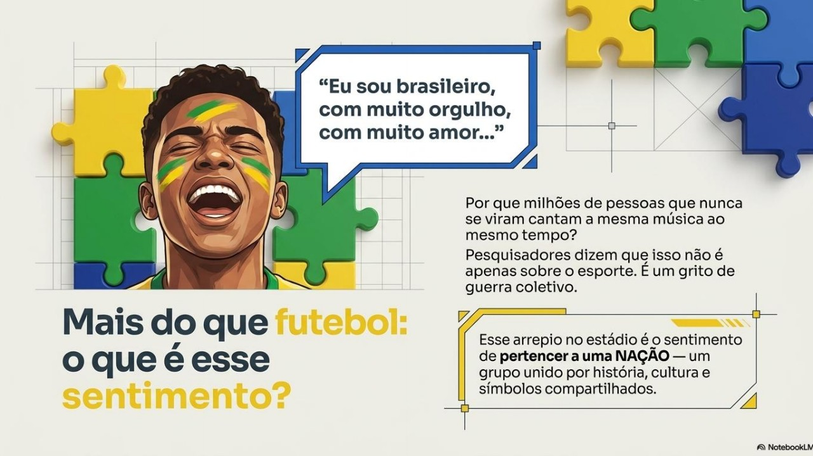
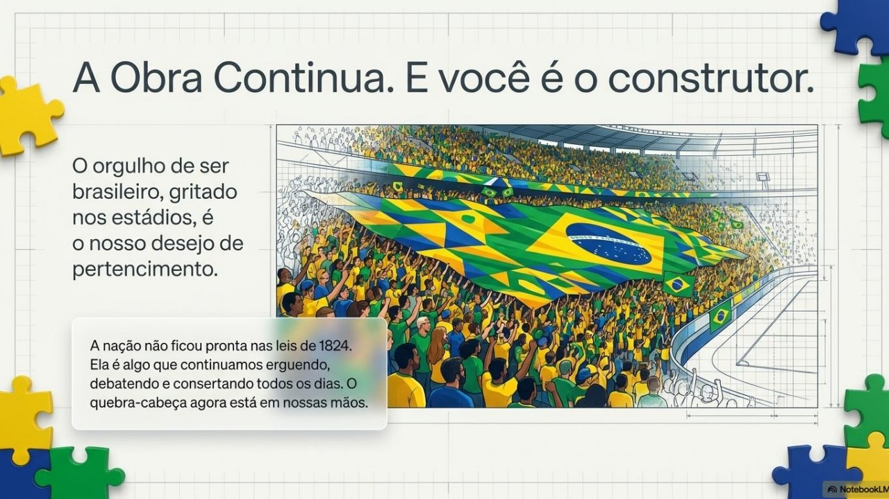

Leia o texto com atenção, observe as imagens e responda às cinco questões. Clique em uma questão para ver a resposta.
Esse projeto inacabado de nação também aparece hoje, de formas inesperadas — como no grito de uma torcida de futebol. Quando a Seleção entra em campo, um canto atravessa gerações nas arquibancadas e nas ruas: "Eu sou brasileiro, com muito orgulho, com muito amor". O refrão nasceu como um jingle das transmissões da TV Globo e virou um canto obrigatório nos estádios, representando a paixão incondicional do torcedor pela seleção.

Mas por que milhões de pessoas, que nunca se encontraram pessoalmente, cantam a mesma frase, ao mesmo tempo, com o mesmo sentimento? Pesquisadores que estudam a linguagem das torcidas mostram que esse grito não fala só de futebol. Ele funciona como uma espécie de "grito de guerra" coletivo, no qual o torcedor reafirma seu orgulho de pertencer ao mesmo povo que a Seleção representa em campo.
É exatamente esse sentimento que os historiadores chamam de nação: um grupo de pessoas que não se conhece pessoalmente, mas que se reconhece como parte do mesmo povo, unido por uma história, uma cultura e símbolos compartilhados — a bandeira, o hino, a camisa amarela e, também, um grito de torcida cantado em coro.
Por isso, da próxima vez que você ouvir (ou cantar) esse refrão, vale parar e pensar: esse orgulho de ser brasileiro existe só quando o time vence? Ou ele diz respeito a algo mais profundo — o sentimento de pertencer a um povo, mesmo nos momentos difíceis?

CAIXETA, Schneider Pereira; PAULA, Luciane de. O orgulho de ser brasileiro: significação e tema. Grupo de Estudos Discursivos (GED), 6 jul. 2014. Disponível em: https://gediscursivos.wordpress.com/2014/07/06/o-orgulho-de-ser-brasileiro-significacao-e-tema/. Acesso em: 6 jul. 2026.
7 MÚSICAS que viraram hinos da torcida brasileira em Copas do Mundo. Estado de Minas, 2026. Disponível em: https://www.em.com.br/trends/2026/07/7453560-7-musicas-que-viraram-hinos-da-torcida-brasileira-em-copas-do-mundo.html. Acesso em: 6 jul. 2026.